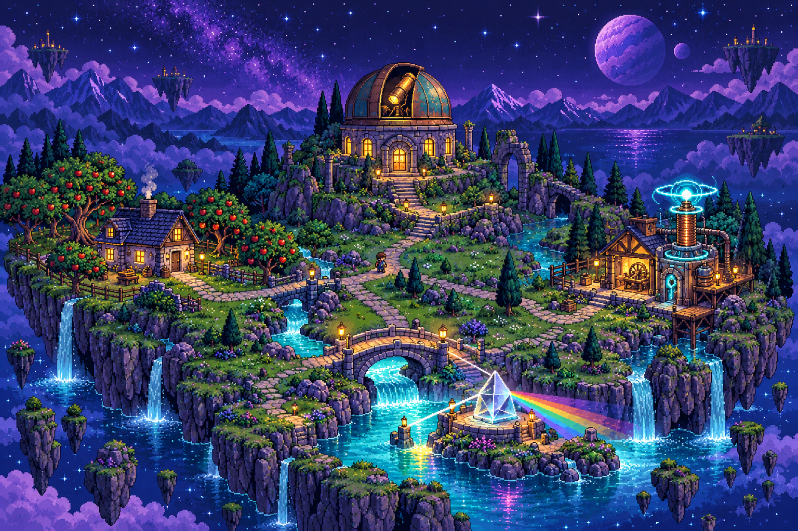

Operational AI agents
MCP tools for Kubernetes, ArgoCD, and GitHub: failure triage, root-cause analysis, and approval-gated actions.
SUDHANSHU’S PORTFOLIO / WELCOME TO MY CORNER OF THE UNIVERSE
AI engineer by profession.
Physics enthusiast by nature.
I build production AI at Rtifact—agents, observability, and systems that help engineers investigate incidents.
Off the workbench, I follow questions about the universe. This is where the two sides meet.
MCP tools for Kubernetes, ArgoCD, and GitHub: failure triage, root-cause analysis, and approval-gated actions.
Anomaly scores, multi-signal evidence, and confidence gates that surface rising issues before threshold-based paging.
Alerts, logs, traces, changes, and runbooks connected so every investigation shows its evidence.
OFF THE CLOCK / MY PHYSICS PLAYGROUND

A personal tribute to the mind that connected a falling apple with an orbiting Moon. Explore his laws, follow the orbit, then launch your own experiment.